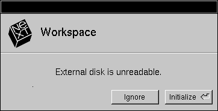
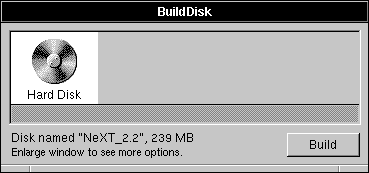
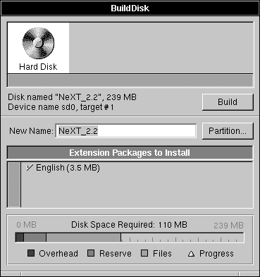
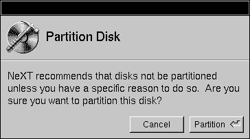
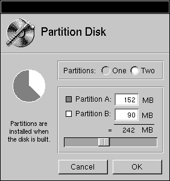
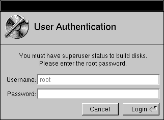
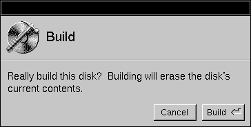
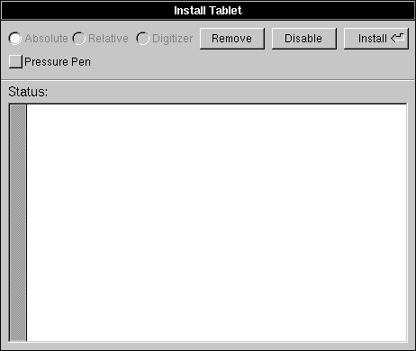

Release 3.3 Copyright ©1994 by NeXT Computer, Inc. All Rights Reserved.
| 7 | Attaching Peripherals | |
| Adding a peripheral device to your NeXT computer can expand its capabilities to meet your specific needs. You may want to increase storage capacity by adding an external hard disk, add output capabilities by attaching a printer, gain access to other computers by configuring a modem, or provide for graphical input by attaching a graphics tablet. This chapter explains how to install and configure each of these devices. |
| Adding a SCSI Disk |
| The addition of an external SCSI disk to your NeXT computer will increase storage capacity and, in some instances, improve performance. A computer that's used as a dedicated file server or mail server benefits from an added SCSI disk. This section describes how to attach and configure a SCSI hard disk.
Installing an Additional SCSI Disk Adding an additional SCSI hard disk to your computer is a simple operation, since NeXT computers include an automatic facility that performs all the necessary disk configuration for you. To configure an additional disk, follow these steps: |
| 1. | Make sure the drive is properly terminated. | |
| The last disk in a chain of drives should be terminated; all intermediate drives should be unterminated. For more information about terminating SCSI devices, see the Owner's Guide. | ||
| 2. | Assign the correct SCSI ID to the drive. | |
| A SCSI ID is a number from 0 to 7 that the computer uses to communicate with the devices connected to it. Each device must have a unique ID. In general, you should choose a SCSI ID greater than 1 for the new hard disk. For information about setting the SCSI ID of your hard disk, see the documentation that came with it. For more information on SCSI ID numbers, see the Owner's Guide. | ||
| 3. | Turn off the NeXT computer, then connect the disk drive using an appropriate cable (for cabling specifics, see the Owner's Guide). Turn on the disk drive, then turn the computer back on. |
| Warning: | You can damage a disk and cause your system to crash if you attach a SCSI disk while the computer is turned on. Always be sure to connect and turn on any external disks before starting up your computer. | |
| Log in using any valid user account. You'll soon see an alert panel telling you that the external disk is unreadable. To configure the disk, click Initialize. |
|  |
| When the initialization process is complete, the disk is mounted (connected to the directory hierarchy) as /UntitledDisk. To rename the disk, select the directory in the File Viewer, double-click the name in the icon path, and enter the name you've chosen.
From now on, this disk will automatically be mounted whenever a user logs in.When a disk is mounted like this, all files on the disk are owned by the current user and are only available when someone is logged in (the files can't, for example, be exported to the network). Removable disks are also treated in this fashion. If you want to be able to assign owners to the files on the disk and make the disk available whenever the computer is on, you'll need to make a mount entry for the disk, as described in the next section. Note: If the SCSI hard disk becomes corrupted, you'll see an alert panel when you log in. To repair the file corruption with fsck, click Repair (see Chapter 9, "System Startup and Shutdown," for more details about fsck). If the file corruption persists after repeated repair attempts, you can reinitialize the disk by clicking Initialize (this destroys all existing data on the disk).
Making a Mount Entry for a Hard Disk If you want your hard disk to be explicitly mounted whenever the computer is booted, you'll need to create a mount entry for it: |
| 1. | Log in as root. | |
| 2. | Determine the device number and name of the newly attached hard disk. | |
| Each SCSI device is assigned a device number at boot time. The SCSI device with the lowest SCSI ID is assigned device number 0; the SCSI device with the next lowest ID is assigned device number 1; and so on. The device name of a disk with device number n is /dev/sdna. So, a disk with device number 1 is /dev/sd1a. Here's an example that matches SCSI IDs with device numbers: |
| SCSI ID | Device Number | |
| 3. | Determine where you want to mount the hard disk. If you want to use the disk for home directories, /Users is a likely mount point (a mount point is the directory used to connect the existing directory hierarchy to the files contained on another disk). If you want to use it for queuing electronic mail, /usr/spool/mail is the correct mount point. Make sure that the mount point directory exists, or at least the parent directory of your chosen mount point. If you want to mount the disk as, say, /Departments/marketing, the directory /Departments must already exist. Once mounted, the files and directories on the external disk will be available under the mount point directory. |
| Warning: | If the directory that you choose for the mount point already has files in it, those files will be hidden when the new disk is mounted. Choose a new mount point, or move the files to another location (if you wish, you can move them again onto the new hard disk once it's mounted). | |
| Open /etc/fstab and modify it to contain an entry for the new disk. Find the line: |
 /dev/sd0a / 4.3 rw,noquota,noauto 0 1
/dev/sd0a / 4.3 rw,noquota,noauto 0 1
| Copy that line, and edit the new line to read: |
 /dev/sdna /mount_point 4.3 rw,noquota 0 2
/dev/sdna /mount_point 4.3 rw,noquota 0 2
| where n is the device number of the new disk and mount_point is the path of the mount point you've chosen. |
| 5. | Reboot the computer by turning it off and back on. | |
| When the computer is booted, it looks in /etc/fstab to determine which disks to mount. For each entry in this file, a connection is made between the files contained on the specified device (the first field of each entry) and the mount point (the second field). The remaining information is a list of options describing the mount. For more information, see the UNIX manual pages for fstab and mount. |
| The disk is now mounted explicitly, and is available whenever the computer is turned on. Files on the disk can be owned by any user, not just the one currently logged in.
Building a Bootable Disk Each NeXT computer is shipped with the system files installed on its internal hard disk. When the system boots, it reads the necessary files off this disk, called the boot disk. The top levels of the directory hierarchy are contained on this disk, and when any additional disks are mounted, their files are connected into this existing directory structure. If you want to use an external disk as the boot disk (perhaps you've purchased one with larger capacity), you'll need to install the system files on it. The BuildDisk application is used for this purpose. |
| 1. | Initialize the disk as described in "Installing an Additional SCSI Disk" earlier in this chapter. | |
| 2. | Log into the computer and start up the BuildDisk application, located in /NextAdmin. | |
| 3. | The BuildDisk panel appears (yours may look a little different, depending on your computer configuration). Make sure that the disk you want to build is selected in the top area of this panel. |
|  |
| 4. | Disks are normally built with a single partition (section of the disk containing a directory structure or file system) filling the entire available disk space. If you'll be using a single partition, skip this step. If you want your disk to have two partitions, do the following: |
| a. | Enlarge the BuildDisk panel to expose additional options. |
|  |
| b. | Click Partition. A panel appears asking that you verify your intention to partition the disk. Click Partition. |
|  |
| c. | In the window that appears, adjust the partition sizes to match your needs, then click OK. |
|  |
| 5. | Click Build in the main window. If you're not logged in as root, a panel appears asking for the root password. |
|  |
| 6. | Enter the root password and click Login. A panel appears asking you to confirm that you want to build the disk. |
|  |
| 7. | Click Build. As the disk is being built, messages appear in the main window telling you what actions are being taken. Progress is indicated by the meter at the bottom of the window. | |
| 8. | Once the build is complete, turn off the computer and disk drive, then make the appropriate settings on your external disk drive to assign it SCSI target 0. Turn on the disk drive, then the computer. The computer will now boot off the external drive. | |
| Since the internal hard disk is shipped as SCSI target 1 (other internal disks are shipped with a different SCSI target number, but all are higher than 0), setting the external disk as SCSI target 0 assigns it the device name /dev/sd0a (the boot device). The internal disk becomes /dev/sd1a. | ||
| 9. | Use the Workspace Manager to create a directory to be the mount point for the internal disk. |
| 10. | Edit /etc/fstab to add a line similar to the following for the internal disk, replacing /mount_point with the mount point directory you've chosen for the internal disk: |
 /dev/sd1a /mount_point 4.3 rw,noquota 0 2
/dev/sd1a /mount_point 4.3 rw,noquota 0 2
| 11. | If you set up your boot disk with two partitions, create a mount point directory for the second partition, and add another line to /etc/fstab: |
 /dev/sd0b /mount_point 4.3 rw,noquota 0 2
/dev/sd0b /mount_point 4.3 rw,noquota 0 2
| 12. | Reboot your computer, or enter the following command in a shell window: |
 mount -avt 4.3
mount -avt 4.3
| This command mounts all the local file systems. For more information, see the UNIX manual page for mount. |
| Building a Swap Disk
NeXT computers use a virtual memory system, which utilizes disk space as an extension to RAM, when necessary. The process of moving data from main memory onto disk (and back) is called swapping. Since swapping can happen with great frequency (depending on your memory configuration and system use), you can improve performance by adding a small hard disk to be used just for this purpose (a swap disk). |
| 1. | Follow the procedures for building a bootable disk in the previous section. When BuildDisk sees that the disk you're building won't hold even the base release, it assumes that you want to create a swap disk, since it isn't large enough to be made into a bootable disk. | |
| 2. | Reboot your computer. The system will now use the external hard disk for swapping. |
| Attaching a Printer |
| You can use a wide variety of printers with your NeXT computer. NeXT has two printers in its product line, but you can also use other PostScript and non-PostScript printers. The installation procedure varies depending on the type of printer you have. The following sections describe how to attach and configure whatever printer you'll be using.
Attaching and Configuring Printers All the information you need to install and configure a NeXT printer is contained in the NeXT 400 dpi Laser Printer Owner's Guide, the NeXT Color Printer Owner's Guide, and the User's Guide. NeXT computers come with configuration information for a wide variety of non-NeXT printers. If your printer is included in this list, you can use the PrintManager application to install it. Instructions are included in the User's Guide.
Setting Baud Rate and Flow Control In order for your NeXT computer to communicate properly with your printer, you must make sure that flow control and baud rates are configured appropriately.
Flow Control Computers can usually send data faster than printers can receive it. A protocol for communication, called flow control or handshaking, prevents data being lost due to printer buffer overflow. Flow control allows a printer (or other device) to signal the computer that the buffer is full and the computer should stop transmitting data. When the printer has processed earlier data and is ready for more, it can again signal the computer. Software flow control indicates that the control signals are sent as special characters on the regular transmission wire, while hardware flow control indicates that specific pins on the cable will be asserted or deasserted to communicate status. Your printer manual should tell you what type of flow control your printer supports and how to enable it. All NeXT computers support a type of software flow control called XON/XOFF, while NeXT 68040-based computers also support a type of hardware flow control called CTS/RTS (clear-to-send/request-to-send). Many printers use DTR hardware flow control instead. This means that they use a different signal when they want the controlling computer to stop sending data. If you will be using DTR flow control on your printer, you'll need a custom cable. For more information, see Appendix B, "Cable and Modem Configuration."
Setting the Printer Baud Rate and Flow Control Consult your printer manual to determine how to set its baud rate and flow control. Your printer might have buttons or switches to change these settings. PostScript printers might require that you send PostScript code to the printer in order to set baud rate and flow control. Note: You must use PrintManager to set the baud rate of the NeXT serial port to match the current setting of the printer before you can perform these steps. Once you've changed the baud rate of the printer, you can go back and change the baud rate of the port in PrintManager. |
| 1. | Create a file containing code similar to the following (be sure to save the file as ASCII text with a name ending in .ps): |
 %!
%!
 serverdict begin 0 exitserver
serverdict begin 0 exitserver
 statusdict begin
statusdict begin
 25 19200 0 setsccbatch
25 19200 0 setsccbatch
 end
end
| The fourth line of this program sets the device number, baud rate, and flow control. The first number is the device number, the second is the baud rate, and the third is the mode of flow control. Check your printer manual for the appropriate numbers to use. (It's usually a good idea to select the highest baud rate supported by both the printer and NeXT computer. The serial ports on a NeXT computer support baud rates up to 38400; for a complete list of the port baud rates, see the UNIX manual page for tty). |
| 2. | Send the PostScript file to your printer. Enter the following command in a shell window, replacing printername with the name you used to configure the printer, and filename with the name you gave the PostScript code file: |
 lpr -Pprintername filename
lpr -Pprintername filename
| This command will not print a page; it merely sets the baud rate and flow control. Consult your printer manual to see if these changes are lost when your printer is turned off. |
| Attaching Modems |
| With a modem, you can connect your NeXT computer to a phone line, giving you access to the broad world of UNIX networking. You can use a number of software programs to take advantage of UNIX networking capabilities, including tip and UUCP. This section describes the procedures for installing data modems. For information on installing fax modems, see the User's Guide.
Modem Hardware You can use NeXT computers with a variety of modems, including Telebit, Hayes, and many others (for more information, see Appendix B). For compatibility with NeXT computers, modems must have the following features: |
| Must control the DCD (data carrier detect) signal so that it reflects the presence or absence of a remote carrier. | ||
| Must respond to the DTR (data terminal ready) signal so that it only answers the phone when DTR is on. It must also either drop the phone line or perform a reset when DTR goes from on to off. | ||
| Must support CTS/RTS (clear-to-send/request-to-send) flow control if hardware flow control is to be used with a 68040-based NeXT computer. Specifically, when RTS is off, the modem must not send data to the computer, and when the modem wants the computer to suspend data transmission, it should turn off CTS. |
| Note: "Hayes-compatible" can mean a variety of things, depending on the modem. To use your modem most effectively, make sure it supports the signaling described here.
Configuring a Modem for tip and UUCP Software This section explains how to set up a modem for use with the tip command and with UUCP software (both are UNIX programs shipped with every NeXT computer). The tip command lets you log into a remote system as a remote terminal (for more information, see the UNIX manual page for tip). UUCP gives you access to a worldwide UNIX network over which you can remotely copy files from one system to another, send jobs to be executed on a remote computer, and send and receive remote mail (for more information, see Chapter 12, "Using UUCP"). Other communications programs are available, both commercially and in the public domain.
Enabling Dial-out Capability The following steps will set up your modem for dialing out with tip (for additional information about setting up your modem for use with UUCP, see Chapter 12): |
| 1. | Attach the modem to serial port A or B on your NeXT computer using an appropriate cable (see Appendix B). | |
| 2. | Set the modem parameters as follows (refer to your modem manual for instructions): |
| To connect to the computer at any speed, with the highest rate supported by your modem as the default | ||
| To hang up when DTR is deasserted | ||
| To set DCD when a carrier from another modem is sensed |
| Note: Some modems support XON/XOFF software flow control. If the modem will be used mainly with the tip command, it's a good idea to enable XON/XOFF flow control on the modem. If the modem will be used mainly with UUCP or other programs, XON/XOFF should be disabled. |
| 3. | To set up your modem for use with tip, edit the file /etc/remote so that it has an entry similar to the following: |
 a19200|a19.2|Dial-out on cua at 19,200 baud:\
a19200|a19.2|Dial-out on cua at 19,200 baud:\
 :dv=/dev/cua:br#19200:el=^C^S^Q^U^D:ie=%$:oe=^D
:dv=/dev/cua:br#19200:el=^C^S^Q^U^D:ie=%$:oe=^D
| Use /dev/cua or /dev/cub for dialing out without hardware flow control, and /dev/cufa or /dev/cufb for dialing out with hardware flow control. If you operate your modem at a different baud rate, change all occurrences of 19200 to the baud rate you're using. For more information, see the UNIX manual page for tip, or the documentation for your communications software. |
| You should now be able to communicate with your modem and use it to call other sites.
Enabling Dial-in Capability If you want your modem to be used for dial-in purposes, set it to autoanswer, then follow these steps: |
| 1. | Log in as root. | |
| 2. | Edit the appropriate line in /etc/ttys to turn on dial-in capabilities, so that it looks like this: |
 dev_name "/usr/etc/getty type" dialup on
dev_name "/usr/etc/getty type" dialup on
| Replace dev_name with one of the following: |
| ttyda | Modem on port A | |
| ttydb | Modem on port B | |
| ttydfa | Modem on port A with hardware flow control | |
| ttydfb | Modem on port B with hardware flow control |
| Replace type with either std.baud or D.baud, where baud is the baud rate of the connection. This field corresponds to an entry in the file /etc/gettytab. The form std.baud is used for communication at a specific baud rate, while D.baud indicates that communication can be established at various speeds. Double-check /etc/gettytab to make sure that an entry exists for the type you've chosen. If not, you'll need to create one.
Note: Be sure not to use the lines beginning with ttya or ttyb, since these are for directly connected terminals. Also avoid using the secure option with dial-in modems, since this allows root access. For more information, see the UNIX manual pages for ttys and tset. |
| 3. | Force the computer to read the modifications to /etc/ttys by rebooting your system or, if you prefer, by entering the following command into a shell window as root: |
 kill -HUP 1
kill -HUP 1
| Your modem will now respond to incoming calls. |
| Installing a Graphics Tablet |
| The InstallTablet application lets you install a graphics tablet onto serial port B for use as a graphical input device. To be used on a NeXT computer, the graphics tablet must be compatible with SummaSketch I (MM I format) and use a 12-by-12 inch format.
Use InstallTablet to configure your graphics tablet: |
| 1. | Physically connect your graphics tablet to port B. | |
| 2. | Log into the system as root. | |
| 3. | Start up the InstallTablet application, located in /NextAdmin. | |
| 4. | Click Install in the panel that appears. |
|  |
| You see a series of messages in the status area, and the installation completes automatically. |
| 5. | Select a mapping mode by clicking the appropriate button.The choices are: |
| Absolute--In this mode, the entire surface of the tablet is mapped to the screen, so that each corner of the tablet corresponds to the analogous corner of the screen. A one-inch horizontal movement on the tablet doesn't necessarily move the cursor the same distance as a one-inch vertical movement. If you pick up the tablet pen and put it down somewhere else, the cursor moves. | ||
| Relative--The tablet behaves more like a mouse. If you pick up the tablet pen and put it down somewhere else, the cursor does not move. A one-inch movement either horizontally or vertically moves the cursor an equal distance. | ||
| Digitizer--This mode is used for precise digitizing of documents. For example, you can copy in a drawing, and your art retains the same spatial ratio on the screen (without distortion in either direction). As in absolute mode, if you pick up the pen and put it down, the cursor moves. However, the same movement on the tablet in either direction produces the same amount of movement in the cursor. Although the sides of the tablet are mapped to the same ones on the screen, the active area of the tablet is reduced to match the screen height. |
| Disabling or Removing the Tablet
When you install a graphics tablet, serial port B is put into a special mode and is not available for other uses until you disable or remove the application. For this reason, you may want to disable the tablet when you're not using it. |
| 1. | To temporarily disable the graphics tablet, click the Disable button in the InstallTablet panel. | |
| Once the tablet has been disabled, you can no longer control the cursor from the tablet, and serial port B is returned to its normal operation. However, some configuration is left in place on the computer, which makes installation faster the next time you want to use it. When you're ready to use the tablet again, just click the Install button in the InstallTablet panel. | ||
| 2. | To remove the graphics tablet configuration information entirely, click the Remove button. In the alert panel that appears, click Remove. This removes all traces of the tablet driver and returns serial port B to normal operation. |
| Troubleshooting |
| This section will help you pinpoint any problems you may encounter performing the procedures in this chapter.
Disk Troubleshooting If you're having trouble accessing your hard disk after installation, you can attempt to locate the source of the problem by making the following checks: |
| 1. | If the drive won't power up, check the drive manual for instruction. | |
| 2. | Make sure the drive is properly connected and terminated. See the Owner's Guide for more information. | |
| 3. | Make sure that the disk is writable. Check the write-protect jumpers or switches on the disk drive and make sure that write-protection is turned off. | |
| 4. | Check to see if the kernel recognizes the disk drive by performing the following: |
| a. | Boot your computer from the ROM monitor (or with verbose test mode enabled) so you can see the system startup messages. For more information, see Chapter 9, "System Startup and Shutdown." | |
| b. | As the system boots, look for the output related to the disk drives. What you see should look something like this: |
 SCSI 53C90A Controller....
SCSI 53C90A Controller....
 MAXTOR XT-8360S as sd0 at sc0 target 1 lun 0
MAXTOR XT-8360S as sd0 at sc0 target 1 lun 0
 Disk label: MyDisk.
Disk label: MyDisk.
 Disk capacity: 660MB, Device Block 1024 bytes
Disk capacity: 660MB, Device Block 1024 bytes
 YOUR NEW DISK VENDOR AND MODEL as sd1 at sc0 target 2
YOUR NEW DISK VENDOR AND MODEL as sd1 at sc0 target 2
 sd1: Can't read label
sd1: Can't read label
| There should be a line for each drive connected to the system. The error message "Can't read label" indicates that the disk hasn't been initialized. Note the portion "as sd1 at sc0 target 2" in these messages. This indicates that the disk drive has been seen by the kernel as SCSI target 2. Verify that this number agrees with the SCSI target number you've assigned to the drive. |
| c. | If you don't see a line for your new drive, the kernel is not locating the drive. This could be caused by poor cabling, faulty termination, or an incompatible disk drive (a disk drive is incompatible if it can't interpret the SCSI signals used by NeXT computers). |
| 5. | If the system recognizes the disk drive, the problem might be its entry in /etc/disktab. See the UNIX manual page for disktab for details. |
| If you receive media errors when attempting to access a hard disk, or see console error messages naming bad blocks, you might need to do a low-level format of the hard disk. To reformat the disk, enter the following as root, replacing rsd?a with the appropriate device name. |
 disk -F /dev/rsd?a
disk -F /dev/rsd?a
| Warning: | This command reformats the disk, erasing any existing data. If you don't have a complete backup, attempt to retrieve important data from the disk before entering this command. | |
| See Chapter 9 for more information about disk troubleshooting. | ||
| Printer Troubleshooting | ||
| If you have trouble with your printer, the most common causes are: |
| Defining the wrong baud rate between your NeXT computer and the printer (see "Attaching a Printer" earlier in this chapter). | ||
| Using a Macintosh serial cable. These cables are incompatible with 68040-based NeXT computers, and are usually incompatible with 68030-based NeXT computers. | ||
| Using a serial cable designed for a 68030-based NeXT computer on a 68040-based NeXT computer. They're incompatible. |
| For help in diagnosing printer problems, the file /usr/adm/lpd-errs might contain some helpful information. This file contains a log of any errors that occur during the printing process.
You can get further help in diagnosing printer problems by downloading the program ehandler.ps, located in /usr/lib/transcript (this is for PostScript printers only). This program makes the printer print a page listing any errors after each job is printed. To download ehandler.ps, enter the following in a shell window: |
 lpr -Pprintername ehandler.ps
lpr -Pprintername ehandler.ps
| Once downloaded, ehandler.ps continues to follow each failed job with an error sheet until the printer is reset or turned off.
Modem Troubleshooting If you have trouble dialing out with your modem, the terminal line may be locked in some way. This is indicated by a message similar to the following: |
 /dev/cua: Device busy
/dev/cua: Device busy
 link down
link down
| If you receive such a message, check the following: |
| You should always dial out using /dev/cua or /dev/cub (/dev/cufa or /dev/cufb for hardware flow control) as the call-out device names. If you use tip to dial out, /etc/remote should specify these device names. | ||
| Check to see if someone is already logged in on the terminal line you want to use. | ||
| Look in the directory /usr/spool/uucp/LCK to see if there's an open lock file on the terminal line. If there is, you see a file in the directory in the format LCK..device_name where device_name might be cua or cub. This file must be removed before you can use this line. | ||
| Important: Be sure the serial port really isn't being used by anyone before removing the lock file. |
| If you've been using a device (printer or modem) on a port and decide to use that port for a different purpose, be sure to correct any entries in /etc/ttys.
Graphics Tablet Troubleshooting If you encounter problems during installation, first make sure the tablet is firmly connected to serial line B. Click the Install button again. If the installation fails a second time, reboot the computer and try again. |